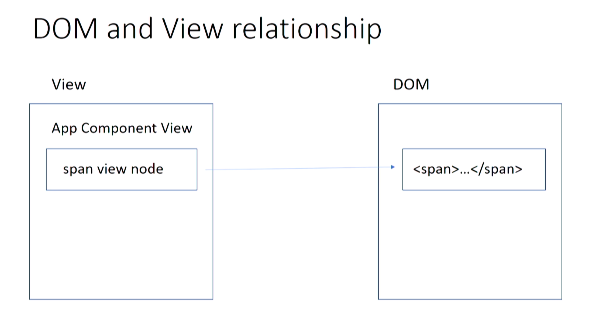
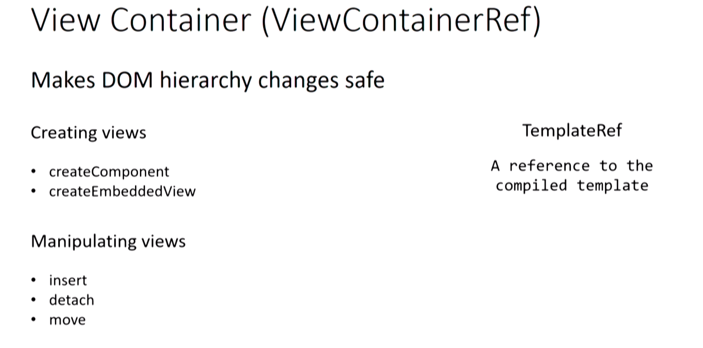
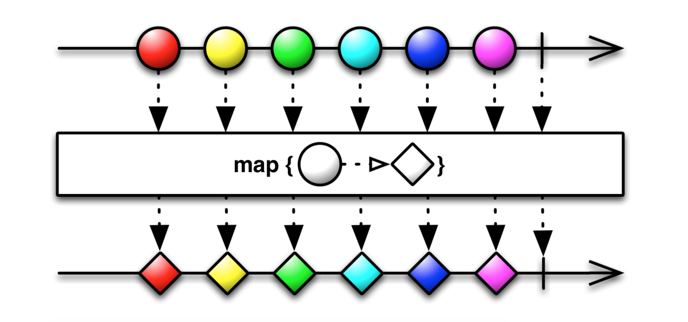
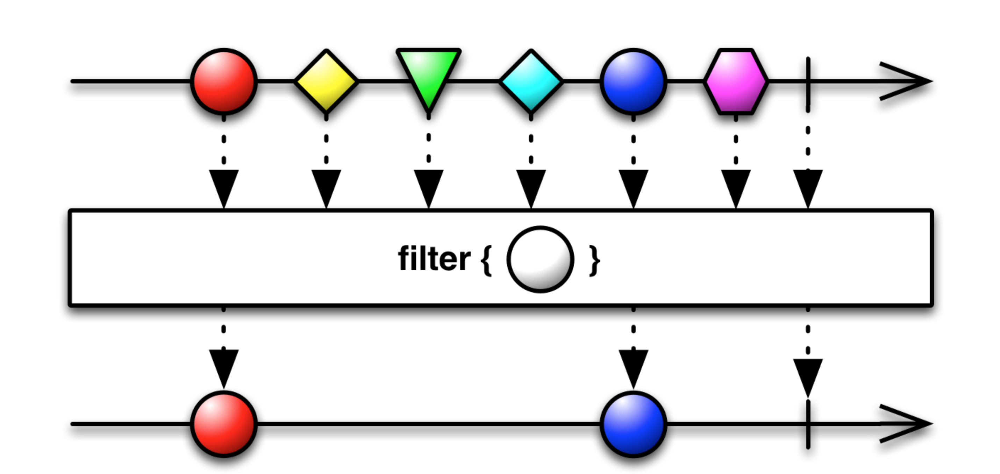
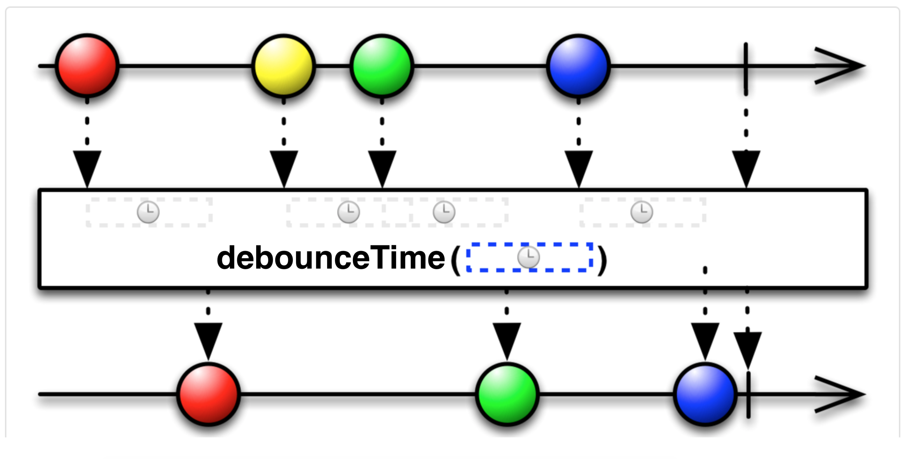
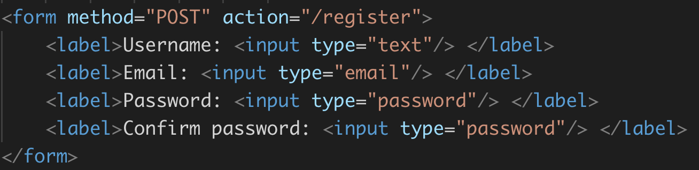

A platform and framework for building client applications in HTML and TypeScript.
Node Package Manager (npm)
You can find all the packages on npmjs.org
In order to install a package you have to wirte:
npm install package_name
The module will be installed in a directory called node_modules inside the directory where you ran the command from.
In order to install it globally you can specify -g flag
All the project dependencies are listed in a package.json file
The npm install command will add the package as an entry to the package.json file (if it exists)
To create the package.json write:
npm init

All the packages are installed by default under the dependencies listing
To install it under the devDependencies you need to specify the -D flag
In order to install only the dependencies listed under the dependencies section (without devDependencies)
npm i --production
npm scripts
pre/post scripts
"scripts": {
"preinstall": "scripts/preinstall.js"
"install" : "scripts/install.js",
"postinstall" : "scripts/postinstall.js",
"start:server": "app/server.js"
}
Running the npm install command will first run the preinstall, followed by the install and finally the postinstall
In order to run the start:server script we need to use: npm run start:server (run tells npm to execute the file)
package-lock.json
Pakcage lock is a file that ensures that every environment where the npm install is run will have the same version of dependencies as the user who installed them.
Push the package-lock.json to the repository as well.
Don't forget to place the node_modules in the .gitignore file, we shouldn't push that to the repository!
Kahoot
npmRecap
- npm is a dependency managment tool
- We can install packages using the npm install command
- We can run scripts that are not overriding default npm commands using the: npm run script_name
- Don't forget to ignore the node_modules so that it's not pushed to the repository
Intro into TypeScript
- A superset of JavaScript created by Microsoft
- Supports types, classes, interfaces, generics, annotations
- Easy to learn by Java, C#, and C++ developers
- Transpiles code into a human-readable JavaScript
- Supports most of the ES6 and some ES7 syntax
Transpiling TypeScript Interactively
TypeScript
let foo: string;
class Bar {
}
JavaScript (ES5)
var foo;
var Bar = (function () {
function Bar() {
}
return Bar;
}());
Classes
TypeScript
class Person {
public firstName: string;
public lastName: string;
public age: number;
}
let p = new Person();
p.firstName = "John";
p.lastName = "Smith";
p.age = 29;
JavaScript (ES5)
var Person = (function () {
function Person() {
}
return Person;
}());
var p = new Person();
p.firstName = "John";
p.lastName = "Smith";
p.age = 29;
Optional types
TypeScript
//Implicit types
let productName = 'BMW';
productName = 'Mercedes';
// compile error in TS
productName = 123;
// Explicit types
let productVendor: string = 'Samsung';
productVendor = 'Sony';
// compile error in TS
productVendor = 123;
JavaScript (ES5)
// Implicit types
var productName = 'BMW';
productName = 'Mercedes';
// no compiler error in JS
productName = 123;
A Class With Constructor. Take 1
TypeScript
class Person {
public firstName: string;
public lastName: string;
public age: number;
private _ssn: string;
constructor(firstName: string, lastName: string, age: number, ssn: string) {
this.firstName = firstName;
this.lastName = lastName;
this.age = age;
this._ssn = ssn;
}
}
var p = new Person("John", "Smith", 29, "123-90-4567");
console.log("Last name: " + p.lastName + " SSN: " + p._ssn);
JavaScript (ES5)
var Person = (function () {
function Person(firstName, lastName, age, ssn) {
this.firstName = firstName;
this.lastName = lastName;
this.age = age;
this._ssn = ssn;
}
return Person;
}());
var p = new Person("John", "Smith", 29, "123-90-4567");
console.log("Last name: " + p.lastName + " SSN: " + p._ssn);
A Class With Constructor. Take 2
TypeScript
class Person {
constructor(
public firstName: string,
public lastName: string,
public age: number,
private _ssn: string
) { }
}
var p = new Person("John", "Smith", 29, "123-90-4567");
console.log("Last name: " + p.lastName + " SSN: " + p._ssn);
JavaScript (ES5)
var Person = (function () {
function Person(firstName, lastName, age, _ssn) {
this.firstName = firstName;
this.lastName = lastName;
this.age = age;
this._ssn = _ssn;
}
return Person;
}());
var p = new Person("John", "Smith", 29, "123-90-4567");
console.log("Last name: " + p.lastName + " SSN: " + p._ssn);
Inheritance
Classical syntax
class Person {
constructor(
public firstName: string,
public lastName: string,
public age: number,
private _ssn: string
) { }
}
class Employee extends Person { }
Prototypal
var __extends = (this && this.__extends) || function (d, b) {
for (var p in b) if (b.hasOwnProperty(p)) d[p] = b[p];
function __() { this.constructor = d; }
d.prototype = b === null ? Object.create(b) : (__.prototype = b.prototype, new __());
};
var Person = (function () {
function Person(firstName, lastName, age, _ssn) {
this.firstName = firstName;
this.lastName = lastName;
this.age = age;
this._ssn = _ssn;
}
return Person;
}());
var Employee = (function (_super) {
__extends(Employee, _super);
function Employee() {
return _super.apply(this, arguments) || this;
}
return Employee;
}(Person));
Generics
TypeScript
class Person {
name: string;
}
class Employee extends Person {
department: number;
}
class Animal {
breed: string;
}
let workers: Array<Person> = [];
workers[0] = new Person();
workers[1] = new Employee();
workers[2] = new Animal(); //A compile time error
JavaScript
var __extends = (this && this.__extends) || function (d, b) {
for (var p in b) if (b.hasOwnProperty(p)) d[p] = b[p];
function __() { this.constructor = d; }
d.prototype = b === null ? Object.create(b) : (__.prototype = b.prototype, new __());
};
var Person = (function () {
function Person() {
}
return Person;
}());
var Employee = (function (_super) {
__extends(Employee, _super);
function Employee() {
return _super.apply(this, arguments) || this;
}
return Employee;
}(Person));
var Animal = (function () {
function Animal() {
}
return Animal;
}());
var workers = [];
workers[0] = new Person();
workers[1] = new Employee();
workers[2] = new Animal(); //No errors
Interfaces as Custom Types
TypeScript
interface IPerson {
firstName: string;
lastName: string;
age?: number;
}
class Person {
constructor(public config: IPerson) { }
}
const aPerson: IPerson = {
firstName: "John",
lastName: "Smith",
age: 29
}
const p = new Person(aPerson);
console.log("Last name: " + p.config.lastName);
JavaScript
var Person = (function () {
function Person(config) {
this.config = config;
}
return Person;
}());
var aPerson = {
firstName: "John",
lastName: "Smith",
age: 29
};
var p = new Person(aPerson);
console.log("Last name: " + p.config.lastName);
//No interfaces here
Interfaces and implements
TypeScript
interface IPayable {
increasePay(percent: number): void
}
class Employee implements IPayable {
increasePay(percent: number) {
//increase salary
}
}
class Contractor implements IPayable {
increasePay(percent: number): void {
//increase hourly rate
}
}
let workers: Array<IPayable> = [];
workers[0] = new Employee();
workers[1] = new Contractor();
workers.forEach(worker => worker.increasePay(30));
JavaScript
var Employee = (function () {
function Employee() {
}
Employee.prototype.increasePay = function (percent) {
//increase salary
};
return Employee;
}());
var Contractor = (function () {
function Contractor() {
}
Contractor.prototype.increasePay = function (percent) {
//increase hourly rate
};
return Contractor;
}());
var workers = [];
workers[0] = new Employee();
workers[1] = new Contractor();
workers.forEach(function (worker) { return worker.increasePay(30); });
Installing the TypeScript transpiler
npm i -g typescript
To transpile a typescript file (.ts) to a .js file:
tsc —t ES5 file_name (-t specifies the target to be ES5 the standard supported by all browsers)
TypeScript configuration file (tsconfig.json)
Saves us from writing tons of flags
List of all the options
{
"compilerOptions": {
"rootDir": "src",
"outDir": "./dist/out-tsc",
"target": "ES5",
"module": "commonjs",
"experimentalDecorators": true, // used by Angular
"sourceMap": true
},
"include": [
"src/**/*"
],
"exclude": [
"node_modules",
"**/*.spec.ts"
]
}
If the tsconfig.json is not in the current directory specify the
--project flag with the relative path to the tsconfig
Recap
- Typescript is a superset of JavaScript
- Supports types, classes, interfaces, generics, decorators
- Transpiles TypeScript code to human readable JavaScript
- We can transpile .ts files using the tsc command
- We should create a tsconfig.json file to store all our compiler options
The big picture

Angular CLI
Official documentation
The Angular CLI helps us with:
- Scaffolding a new project that will serve as the base for our application
- Scaffolding components, directives, pipes, modules, etc.
- Has a built in development server to run our application
- Creates development and production builds
- Has built in configurable test runner (Karma as the testing framework and Jasmine as the assertion library)
Setting up the CLI
- npm i -g @angular/cli
- ng new project_name (add the --style=scss in order to generate the project using the scss css preprocessor)
- cd project_name
- ng serve -o
Check the core files
- src directory
- main.ts file
- app.module
- angular.json
- package.json
Angular CLI scaffolding commands
- ng g c component_name (ng generate component)
- ng g s service_name (ng generate service)
- ng g m module_name (ng generate module)
- ng generate --help
Recap
- We use the CLI to generate a new app (new new app_name)
- We can use the CLI to scaffold components, services, modules, etc.
- We use the CLI to serve our application in development mode
- We use the CLI to start our test runners
Clone traning application
git clone https://github.com/groszwilhelm/angular_workshop.git
cd angular_workshop
git fetch
git checkout brasov-training
npm i
npm start
Components
- combination of an HTML template and a component class that controls a portion of the screen
- class, decorator, metadata
- defined views
- use services
import { Component } from '@angular/core';
@Component({
selector: 'ngt-component', // wrapps the whole content
template: ` // backtick
Hello {{ name }}
`,
styleUrls: ['ngt-component.css']
providers: [...]
})
export class NgtComponent {
protected name = 'Angular';
}
Interpolation
import { Component } from '@angular/core';
@Component({
selector: 'ngt-component',
template: `
{{ title }}
My favorite car is: {{ myCar }}
`
})
export class NgtComponent {
protected title = 'Cars';
protected myCar = 'Mercedes';
}
Property binding
import { Component } from '@angular/core';
@Component({
selector: 'ngt-component',
template: `
My favorite car is
<span [innerHTML]="favoriteCar"></span>
`
})
export class NgtComponent {
protected favoriteCar = 'Mercedes';
}
Event binding
import { Component } from '@angular/core';
@Component({
selector: 'ngt-component',
template: `
`
})
export class NgtComponent {
protected notify(): void {
console.log("The button was clicked")
}
}
Two way data binding (banana in the box)
import { Component } from '@angular/core';
@Component({
selector: 'ngt-component',
template: `
<input [(ngModel)]="username" />
`
})
export class NgtComponent {
protected username = 'Test';
}
Assignment
- Create a product property on the AppComponent and assign it the product
- Create a product interface
- Show the product title in the html
- Show the product description in the html
- Show the number of likes of a product
- Show the number of comments of a product
- Add src to the image tag
Kahoot
ComponentsRecap
- Javascript code can be used in the html using interpolation {{ ... }}
- We can bind to DOM node properties (and not only) using square brakets [value]
- Binding to DOM events (and not only) can be achieved through round brakets (click)
- Two way data binding can be achieved by combinding square and round brakets (banana in the box) [(ngModel)]
Inter-component communication
- @Input and @Output properties
- Using a parent component as a mediator
@Input and @Output properties
Think of a component as a black box with entry and exit doors
Properties marked as @Input() are used for getting data from the parent component
Properties marked as @Output() are used for sending events (and data) from a component
@Component({
selector: 'ngt-parent',
template: `
<ngt-child [renderInformation]="data"></ngt-child>
`
})
export class ParentComponent {
protected data = { a: 'test', b: 'data' };
}
@Component({
selector: 'ngt-child',
template: `
{{ renderInformation.a + ' ' + renderInformation.b }}
`
})
export class ChildComponent {
@Input() renderInformation: { a: string, b: string };
}
@Component({
selector: 'ngt-parent',
template: `
The Mediator acts as a man in the middle
A component A sends the data to a mediator, which passes the data to a component B
Component A and Component B don’t know about each other, the parent component can mediate siblings’ communications
An injectable service can mediate communication between any components
Component as a mediator

Assignment
- Create a product component
- Move the product card (<div class="col-md-4">) from the app.component.html to the newly created ProductComponent (html)
- Pass in the product from the AppComponent to the ProductComponent using @Input
- Create an @Output from the ProductComponent that is triggered when the button is clicked
- Create a ProductListComponent and move the interaction with the ProductComponent into it
Kahoot
Components communicationRecap
- Components receive data from their parents via @Input() properties.
- Components send data to their parents by emiting data through their @Output() properties.
- The mediator pattern helps us achieve inter-component communication through a loosely-coupled manner.
Content projection
- It is used for passing HTML elements or Angular components to a child component
- In order for the fragments to be rendered to the DOM, an <ng-content> tag will be used as a placeholder in the child where the actual content should be projected
@Component({
selector: 'ngt-parent',
template: `
This is from the parent component
Parent projects this element into the child
`
})
export class ParentComponent { }
@Component({
selector: 'ngt-child',
template: `
This is from the child component
Multiple content projections
The "select" attribute allows the use of multiple targeted
<ng-content> tags
It's an actual css selector, so any selector can be used: class, attribute, id, element
@Component({
selector: 'ngt-parent',
template: `
This is from the parent component
Title
Some description
General info
`
})
export class ParentComponent { }
@Component({
selector: 'ngt-child',
template: `
`
})
export class ChildComponent { }
Assignment
- Pass in the product title to the ProductComponent using content projection
- Pass in the product description to the ProductComponent using content projection
Kahoot
Content projectionRecap
- We can project content to a child component by using the <ng-content>
- We can have multiple content projection by adding a select attribute to the <ng-content>
Directives
- A class annotated with @Directive()
- Can't have it's own UI (HTML markup)
- It can be attached to an HTML element (native element or component)
- Structural directives—change the DOM layout by adding and removing DOM elements. (*ngFor, *ngIf, *ngSwitch)
- Attribute directives—change the appearance or behavior of an element, component, or another directive.(ngClass, ngStyle)
*ngIf
@Component({
selector: 'ngt-example',
template: `
<div *ngIf="showDetails">
Details section
</div>
`
})
export class ExampleComponent {
protected showDetails = false;
}
*ngFor
@Component({
selector: 'ngt-example',
template: `
<li *ngFor="let product of products; let i = index;">
{{ product.name }}, index: {{ i }}
</li>
`
})
export class ExampleComponent {
protected products = [
{ name: 'product1' },
{ name: 'product2' },
{ name: 'product3' }
];
}
*ngSwitch
@Component({
selector: 'ngt-example',
template: `
<div [ngSwitch]="country">
<div *ngSwitchCase="'DE'"> ... </div>
<div *ngSwitchCase="'SE'"> ... </div>
<div *ngSwitchCase="'FI'"> ... </div>
</div>
`
})
export class ExampleComponent {
@Input() country = null;
}
Description of an attribute directive
import { Directive, ElementRef, HostListener, Input } from '@angular/core';
@Directive({
selector: '[appHighlight]'
})
export class HighlightDirective {
@Input() highlightColor: string = 'white';
constructor(private el: ElementRef) { }
@HostBinding('class.red') red = true;
@HostListener('mouseenter') onMouseEnter() {
this.highlight(highlightColor);
}
@HostListener('mouseleave') onMouseLeave() {
this.highlight(null);
}
private highlight(color: string) {
this.el.nativeElement.style.backgroundColor = color;
}
}
Usage of an attribute directive
<p appHighlight [highlightColor]="blue">Highlight me!</p>
<ngt-component appHighlight [highlightColor]="blue">
Highlight me!
</ngt-component>
Assignment
- Add a products property on the ProductListComponent and assign it the products array from the product-list.ts
- Specify a type for the products property
- Use *ngFor to display the full list of products
- Create a ZoomDirective that will make the image grow when hovered
Kahoot
DirectivesRecap
- Directives can be attached to and HTML tag or a component to enchance the functionality/appearance
- We have two kind of directives:
- structural directives (*ngIf, *ngFor, *ngSwitch)
- attribute directives (ngClass, ngStyle)
The View
- Core concept of Angular
- Every component is represented as the View
- It's an abstraction that associates DOM nodes with the component class
Component to View
DOM and View (one way relation)
- @ViewChild
- @ViewChildren
- @ContentChild
- @ContentChildren
DOM and View (one way relation)
Dynamic components
Create a dynamic modal component in order to randomly add another product to the list.
Pipes
They are functions that help us process data in the template (HTML)
import { Pipe, PipeTransform } from '@angular/core';
/*
* Returns '-'' if the data is null or undefined
* Usage:
* value | emptyValue
* Example:
* {{ undefined | emptyValue }}
* formats value to: '-'
*/
@Pipe({ name: 'emptyValue' })
export class EmptyValueFormatterPipe implements PipeTransform {
transform(value: any): string {
if (value != null && !value.isUndefined && value !== 'null') {
return value;
} else {
return '-';
}
}
}
import { Component } from '@angular/core';
@Component({
selector: 'ngt-example',
template: `
{{ username | emptyValue }}
`
})
export class ExampleComponent {
protected username = null;
}
Assignment
- Create a CurrencyPipe that adds a currency after the price of the product
Services and Dependency Injection
- Don’t instantiate classes with the new operator
- Angular creates and injects services into components, directives or other services
- Angular can create and inject values into variables
- We can inject services into components, directives or services using the constructor
- In order to inject a service / value, angular needs to have that defined in the providers section in a module/component
import { Injectable } from '@angular/core';
// @Injectable(provideIn: 'root')
@Injectable()
export class ListApiService {
...
}
import { Component } from '@angular/core';
@Component({
selector: 'ngt-component',
template: ``
})
export class AppComponent {
constructor(private listApiService: ListApiService) { }
}
@NgModule({
providers: [{
provide: ListApiService,
useClass: ListApiService
}]
})
class AppModule { }
// short hand
@NgModule({
providers: [ListApiService]
})
class AppModule { }
@NgModule({
providers: [{
provide: ListApiService,
useClass: MockedApiService
}]
})
class AppModule { }
@Inject() decorator
Allows us to specify the token type
import { Component, Inject } from '@angular/core';
@Component({
selector: 'ngt-component',
template: ``
})
export class AppComponent {
constructor(@Inject(ListApiService) private listApiService) { }
}
import { Component, Inject, InjectionToken } from '@angular/core';
export const BACKEND_URI = new InjectionToken('BackendUri');
@Component({
selector: 'ngt-component',
template: ``,
providers: [{ provide: BACKEND_URI, useValue: 'qa-server.com' }]
})
export class AppComponent {
constructor(@Inject(BACKEND_URI) private uri) { }
}
Mediator pattern
Service as a mediator

Assignment
- Create a ListService
- Create a method that returns the product list from the ListService and use that in the ProductListComponent
- Create a MockListService with some dummy data and inject that instead of the ListService
Kahoot
ServicesLifecycle Hooks
https://angular.io/guide/lifecycle-hooks#lifecycle-sequence- Component gets created and initialized
- Change-detection mechanism starts monitoring the component
- You can intercept component lifecycle’s key moments by implementing lifecycle hook interfaces
- Angular calls the hooks only if you implemented them
- Component gets destroyed
Each interface has a single hook method whose name is the interface name prefixed with ng. For example, the OnInit interface has a hook method named ngOnInit that Angular calls shortly after creating the component
export class CarComponent implements OnInit {
// implement OnInit's `ngOnInit` method
ngOnInit() {
console.log("On init car component");
}
}
Change Detection (CD)
- CD is about updating the view whenever the underlying model changes
- CD is implemented in the library zone.js
- When async event happens in your browser’s app, CD starts checking components and updates the views
- CD runs unidirectionally from the root of the component tree to each leaf
- Each component has its own change detector that checks if the values in its template expressions (e.g. {{prodTitle}} or [prodId]="productId") has changed.
CD strategies: Default vs OnPush
changeDetection: ChangeDetectionStrategy.OnPush

With OnPush strategy the Zone won’t check a component unless the reference of the value bound to its @Input properties change.
CD strategies: Default vs OnPush

A change in GrandChild1 will cause change detection in all components shown with blue background.
We would still like to trigger CD in the OnPush component
@Component({
selector: 'ngt-component',
template: `
{{car.id}}
{{car.name}}
`,
changeDetection: ChangeDetectionStrategy.OnPush
})
export class CarDetailsComponent {
protected car: { id, name };
constructior(
private productService: ProductService,
private cd: ChangeDetectorRef
) {
this.loadData(7);
}
private loadData(id: number) {
this.productService.getCarById(id)
.subscribe(car => {
this.car = car; // CD won't run
this.cd.detectChanges(); // runs for component and all children
});
}
}
Mutable vs Immutable JavaScript primitives are immutable
// Allocates an address in memory for greeting
let greeting = 'Hello';
// Allocates another address in memory
greeting = 'Hello Mary';
// Allocates an address for the var user
let user = {name: 'John'};
// The address of the var user remains the same
user.name = 'Mary'
Kahoot
Change DetectionRecap
- Angular invokes the lifecycle hooks at a given time during the component lifetime
- Fetching of the data should be placed in the ngOnInit implementation
- Change detection is performed automatically using zone.js library
- We can stop the automatic change detection to improve performance, with ChangeDetection.OnPush but it's up to us to trigger it when needed
Observables
Stream of events you can process with array like operators
Streams: series of values in time
The Observer can provide
Creating Observables
from([1, 2, 3]) // converts an array or iterable into an Observable
of(1, 2, 3) // turns a sequence of values into an Observable
fromEvent(inputElement, 'keyup') // converts an event into an Observable
interval(1000) // emits an integer every second
Marble Diagrams
Map
Filter
Debounce Time
Hands On
Kahoot
ObservablesModules / Refactoring the app
A mechanism to group components, directives, pipes and services that are related
Similar to ES6 Modules ( declarations, imports, exports )
import { NgModule } from '@angular/core';
...
@NgModule({ //decorator
imports: [BrowserModule],
declarations: [AppComponent],
exports: [...],
providers: [...],
bootstrap: [AppComponent]
})
export class AppModule { }
Imports
- Expects an array of modules - only NgModules
- NgModules don't inherit access to the declaration of other NgModule - it must import what it needs
Declarations
- Components / Directives / Pipes belonging to the NgModule - only Declarables
- Declarables are only visible in the module that they are declared in!
Exports
- All declarables are private by default
- We can export declarables in order to use them in other modules as well
- We can export also imported modules!
Providers
- Services declared here will be visible app-wide( scoped using lazy-loading)
- When there are multiple providers for the same injection token, the last registration wins.
- root-scoped / module-scoped - Component providers always supersede NgModule providers
Bootstrap
- The component(s) to bootstrap
entryComponents
- Components that cannot be reached by compiler
AppModule / Application root module
- Contains the component for bootstrap - launch the app
- Dynamic bootstraping - JIT Compiler
- Static bootstraping - AOT Compiler
Feature modules
- Same properties and metadata as the Root Module
- Share the same execution context, same injector as Root Module - services available to all
- Extends the app
- Can expose or hide its implementations from other modules
Shared Module
- Exists to make commonly used components, directives, and pipes available for use in many other modules
- Don't specify providers here!
- Can export modules without using their functionalities
Core Module
- Pure service module with no declarations
- Specify the Core items that will be used in all modules (eg: a UserApiService)
- Imported once when the app starts and never imported anywhere else
Check the application source code
What modules should we create, and how to resturcture the project?
Assignment
- Move the directives, pipes into a SharedModule that will be imported in the AppModule
- Create a CoreModule and provide the ProductService there, import CoreModule inside the AppModule
- Move the ProductComponent and TagFilterComponent into the product-list directory
- Move the product.model into the product directory
Kahoot
ObservablesRecap
- RootModule (AppModule) contains the root module for our application together with the component that will be bootstrapped initially
- FeatureModules represent all the application sub modules, it's up to us to define them and structure our application with them
- CoreModule contains only singleton services, and will be imported into the RootModule
- SharedModule contains reusable components/directives/pipes and modules that it exports in order to provide FeatureModules with the componenents/modules that they depend on
Http
Routing
Single-Page applications (SPA)
SPA don’t refresh the entire page to display different views
SPA is a collection of view states: Home, Product Detail, Transaction history.
The router allows the user to navigate between views inside a SPA
Route configuration
import { Router } from '@angular/router';
import { ProductListComponent } from './product';
import { ProductDetailComponent } from './product/details';
const routes: Routes = [
{
path: 'products',
component: ProductListComponent
},
{
path: 'products/:id',
component: ProductDetailComponent
}
];
@NgModule({
exports: [RouterModule.forRoot(routes)],
})
export class AppRoutingModule { }
Navigating between routes
Navigation with routerLink directive
import { Component } from '@angular/core';
@Component({
selector: 'wsh-component',
template: `
Product List
Details
`
})
export class AppComponent {
protected productId = 2;
}
Programatic navigation
import { Component } from '@angular/core';
import { Router } from '@angular/router';
@Component({
selector: 'wsh-component',
template: `
Product List
Details
`
})
export class AppComponent {
protected productId = 2;
constructior(private router: Router) {}
protected navigateToProductList() {
this.router.navigate(['/products'])
}
protected navigateToProduct(productId) {
this.router.navigate(['/product', productId])
}
}
Retrieving params in a route
import { Component, OnInit } from '@angular/core';
import { ActivatedRoute } from '@angular/router';
@Component({
selector: 'wsh-product-details',
template: `
{{ productId }}
`
})
export class AppComponent implements OnInit{
protected productId = null;
constructior(private route: ActivatedRoute) {}
ngOnInit() {
this.productId = this.route.snapshot.paramMap.get('id');
}
}
Assignment
- Create an AppRoutingModule
- Add the router-outlet component in the app.component.html
- Add two routes: products, products/:id (product list, product details)
- Add routerLink to the "home" button inside the navigation - it should route to the product list
- Add routerLink to the "more details" button inside the product, it should route to a product detail page
Lazy loaded modules
- The app startup time is shorter
- Splitting the app into modules allows creating reusable chunks of code, e.g. ShippingModule
- During bundling, the lazily loaded module is placed in a separate bundle
- The code is loaded only when the user navigates to the module
import { Router } from '@angular/router';
import { HomeComponent } from './home/home.component';
const routes: Routes = [
{
path: 'home',
component: HomeComponent
},
{
path: 'products',
loadChildren: './product/product.module#ProductModule'
}
];
@NgModule({
exports: [RouterModule.forRoot(routes)],
})
export class AppRoutingModule { }
import { Router } from '@angular/router';
import { ProductListComponent } from './product-list/product-list.component';
import { ProductDetailsComponent } from './details/product-details.component';
const routes: Routes = [
{
path: '',
component: ProductListComponent
},
{
path: '/:id',
component: ProductDetailsComponent
}
];
@NgModule({
exports: [RouterModule.forChild(routes)],
})
export class ProductRoutingModule { }
Assignment
- Create an empty HomeComponent and add a route 'home' for it in the AppRoutingModule
- Create a ProductModule and move all the declarations to the ProductModule
- Create a ProductRoutingModule (add it to the imports section for the ProductModule as well) and define an empty route which loads the ProductListComponent
- Define a /:id route which loads the ProductDetailsComponent
- In the AppRoutingModule we need to remove the product relate routes and have only a product route which lazily loads the ProductModule
Preloaders
- During the app launch, it can preload all lazy modules in the background while the user is interacting with your app
- Add preloadingStrategy to the routes config
const routes: Routes = [
....
];
@NgModule({
exports: [RouterModule.forRoot(routes, { preloadingStrategy: PreloadAllModules })],
})
export class AppRoutingModule { }
- You can create a custom preloading strategy by creating a class that implements the PreloadingStrategy interface.
Guards
- CanActivate mediates the navigation to a route
- CanActivateChild mediates the navigation to a child route
- CanDeactivate mediates the navigation away from the current route
- Resolve performs route data retrieval before route activation
- CanLoad mediates the navigation to a feature module loaded asynchronously
- canActivate - allows navigating to a route if a certain canDeactivate - allows navigating from a route if a certain condition is met, e.g. the user is logged in
- canDeactivate - allows navigating from a route if a certain condition is met, e.g. prompting about saving changes
const routes: Routes = [
{
path: 'home',
component: HomeComponent
},
{
path: 'products',
loadChildren: './product/product.module#ProductModule',
canActivate: [LoginGuard],
canDeactivate: [UnsavedChangesGuard]
}
];
@NgModule({
exports: [RouterModule.forRoot(routes)],
})
export class AppRoutingModule { }
Can Activate Guard
@Injectable()
export class LoginGuard implements CanActivate {
constructor(private router: Router){}
canActivate() {
// A call to the actual login service would go here
// For now we'll just randomly return true or false
const loggedIn = Math.random() < 0.5;
if(!loggedIn){
alert("You're not logged in and will be redirected to Login page");
this.router.navigate(["/login"]);
}
return loggedIn;
}
}
Can Deactivate Guard
export class UnsavedChangesGuard implements CanDeactivate<ProductDetailComponent> {
constructor(private _router:Router) { }
canDeactivate(component: ProductDetailComponent){
if (component.name.dirty) {
return window.confirm("You have unsaved changes. Still want to leave?");
}
return true;
}
}
Why should we preload data?
- The connection is slow and it takes two seconds to retrieve the data. The user will look at the empty component for two seconds.
- If the server request returns an error, the user will look at the empty component just to see the error message.
Kahoot
RouterForms
Native implementation
SPA need more than just a native html form
- Get a value from one or all form controls
- Validation for individual and grouped form controls Displaying error messages next to the form control
- Has the user changed or visited a form control?
- Event handling
- Dynamic creation of form controls
There are two types of forms API
- Template-driven - the form model is defined in the component's template using directives. The underlying form model is created implicitly.
- Reactive - the developer explicitly creates an underlying form model in the TypeScript code.
- For template-driven forms: import FormsModule in @NgModule()
- For reactive forms : import ReactiveFormsModule in @NgModule()
Reactive forms
- Create a model programmatically in the TypeScript code
- Link HTML elements to this model using directives in the template You can dynamically configure validators
- You can use RxJS operators for handling form’s values
Classes that help us create the Reactive Form
- FormControl - represents a single form element
- FormGroup - represents a part of the form and is a collection of FormControls
- FormArray - similar to FormGroup, but it has variable length. It’s useful for creating form fields dynamically
Assignment
- Create an AddProductComponent
- Create a new route for it (products/add)
- Add a button in the product list that links to the newly added route
- Using reactive forms create a form in order to add new products
- Save the product
Kahoot
RouterAssignments
- Create 3x Actions (LoadProduct, Success, Error)
- Add a selectedProduct property to the product state, interface
- Handle the 3 action type cases in the reducer
- Create effect to handle the loading of the product
- Create getProduct method in the ProductsStoreService
- Refactor Details Component so that it uses the redux flow
- Change edit page resolver so that it works with the store approach
Testing
Unit tests
In order to write the actual tests we use Jasmin together with Angular Testing Module (@angular/core/testing)
In order to run the tests we use the test runner Karma
Jasmine terminology
A test is written in the function it()
A test suite is written in describe()
import AppComponent from ‘./app.component';
describe('AppComponent', () => {
it('is successfully instantiated', () => {
const app = new AppComponent();
expect(app instanceof AppComponent).toEqual(true);
});
});
Jasmine matchers

Setup and teardown
Setup. Include the functions beforeAll() and beforeEach() in your spec file with the code to execute before all or each spec.
Teardown. Include the functions afterAll() and afterEach() with the code to execute after all or each spec.
Adding coverage to the test
ng test --code-coverage